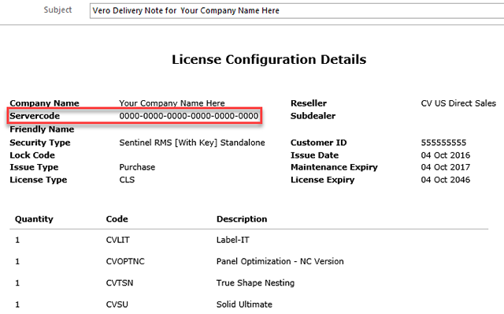
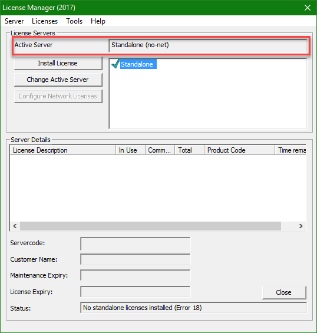
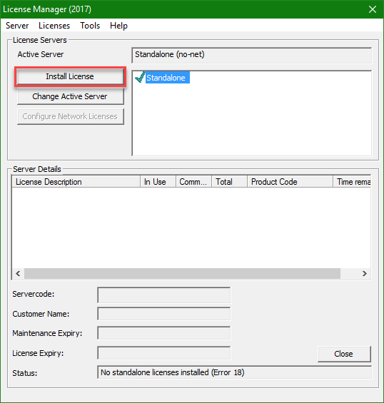

You should have received your Servercode via an email from Vero Software Limited orders@verosoftware.com that contains your Servercode (see image below). If you did not receive this email then you will need to contact your Vero Software Representative to have it emailed to you.
You should see the Vero CLS application running in the Windows System Tray:

Double click the Vero CLS icon to start the Vero CLS License Manager.

When first setting up your Standalone License for your Cabinet Vision product you need to make sure that the Active Server is set to “Standalone (no-net)”.
If it is not set to “Standalone (no-net)” simply click the Change Active Server button to set it.
Next, you will want to click the Install License option.
After you have clicked the Install License button, the Select License dialog is displayed.

You now need to request a license file over the Internet.
To request a license file over the Internet:
To activate the license
If you type in your email address, your information will be sent to the Vero server and - once you have completed the confirmation dialog - you can download and install the license file automatically.
To confirm the license installation
Click Finish to complete the license installation process. You are now ready to run your Cabinet Vision product.